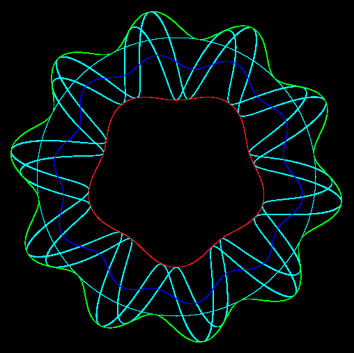

Playing Around With Guilloche Patterns
In my second attempt at rosettes, I was more successful. The envelope functions are defined as before.
The x axis of a sinusoidal function is then mapped to the mid point between the two envelope functions along a radius determined by t. The sinusoidal function is scaled to be between the range -0.5 ... +0.5, 0.5 is added to shift it into the range of 0 ... 1, then it is multiplied by the difference between the two envelope functions, and the inner envelope function is then added to the result. This forms the dynamic radius of our drawing arm, which sweeps around.
Perhaps a picture and a bit of math will help:

The green line is the outer envelope function.
The red line is the inner envelope function.
The blue line is the radial difference between the outer and inner envelope functions and is what the x axis of the sinusoidal cyan lines is mapped to.
The two cyan lines are out of phase by PI / 2.
See: guilloche12.pde